Operating Documentation
Direction 5440001-3, Rev# 6
Signa HDxt Service Methods
Module Version 5.0, Version Date 10/21/08
Operating Documentation |
| Required Persons | Preliminary Reqs | Procedure | Finalization |
|---|---|---|---|
| 1 | Not Applicable | 30 mins | Not Applicable |
This troubleshooting document identifies common failures with the HDx Series Temperature and Humidity Sensors. Most reporting errors are due to incorrect wiring and loose connection issues. The FRU kit 5147136 or 5147136-2 is listed in the HDx Series FRU Manual.
Two types of environmental sensor networks exist in HDx systems. The first type, 5147136, converts the network signals from USB to RS-232 Serial to 1-Wire. It uses a 1-Wire to drive and receive the 1-Wire signals to the 2 sensors. The block diagram for this type is shown in Illustration 1.
Illustration 1: USB to Serial to 1-Wire Environmental Sensors Block Diagram
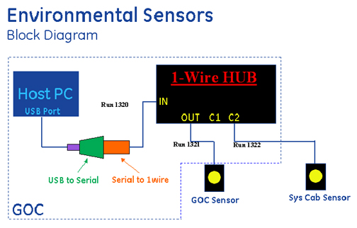
The second type of environment sensor network, 5147136-2, was introduced into HDx MR systems in Q3 of 2008. This type directly converts the signals from USB to 1-Wire, eliminating the intermediate conversion to RS-232 Serial. Additionally, the second type eliminates the need for the 1-Wire Hub. This is accomplished by using the iButton Sensors' SRAM to hold unique ID information for each of the 2 sensors. The block diagram for this type of sensor network is shown in Illustration 2.
Illustration 2: USB to 1-Wire Environmental Sensors Block Diagram
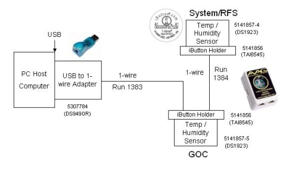
| NOTE: | Either the first or second type of sensor network is installed in the system- not both. |
| NOTE: | The HDx Series environmental sensors obtain environmental readings from the Equipment Room and the back of the GOC. The room's environmental conditions are the responsibility of the customer and their HVAC provider. If the environmental logs are consistently reporting values outside of the HDx Series specifications (found in the Site Environment section in the appropriate HDx Series pre-installation manual), the customer's equipment is at risk and the customer should contact their building's HVAC service personnel as soon as possible. |
| Item | Qty | Effectivity | Part# | Manufacturer | |
|---|---|---|---|---|---|
| Phillips screwdriver | 1 | - | - | - | |
| ||||
| ELECTROCUTION HAZARD! | ||||
| HIGH VOLTAGE PRESENT. | ||||
| USE care when securing component connections. |
| Condition | Reference | Effectivity |
|---|---|---|
For the system shown in Illustration 2, these procedures should only be performed on systems that are 14M5A or later. | - | - |
When performing this procedure, the contents of the GOC will be exposed. Power must be retained during these steps. Extreme caution must be taken.
| ||||
| ELECTROCUTION HAZARD! | ||||
| HIGH VOLTAGE PRESENT. | ||||
| USE care when securing component connections. |
Use a Phillips screwdriver to open the right side cover of the GOC.
To determine which type of network is installed, look for the 1-Wire Hub under the GOC right side cover. If the Hub is installed, the first type of network is installed. Continue with USB to Serial to 1-Wire Network Troubleshooting. Otherwise, the second type of network is installed. Continue procedure in USB to 1-Wire Network Troubleshooting.
Verify that the 1-Wire Hub's 5141855 power LED is illuminated.
Verify that the 9V Power Supply is plugged into J4, J5, or J6 on the power strip inside the GOC cabinet and connected to the side of the 1-Wire Hub. See Illustration 3.
Illustration 3: 1-Wire Hub Connections
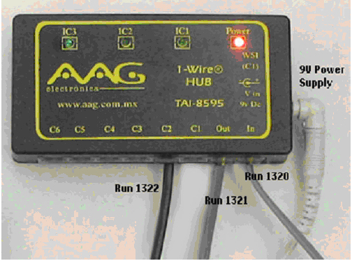
| NOTE: | The 1-Wire Hub does not behave like an Ethernet Hub. Cables from the iButton sensors must be connected to the correct port in order for the iButton data to be reported. The cables are labeled with the run number and port information. |
This step confirms that the communication connections are made securely and properly to the appropriate ports.
Verify that all connections in Run 1320 are secure.
Make sure the 1-Wire Hub's In port runs to the 1-Wire Serial Master. (See Illustration 1 and Illustration 4).
Verify that the connections into and out of the 1-Wire Serial Master 5141859 and the USB to DB9 Serial Adapter 5146678 are secure as shown in Illustration 4.
Illustration 4: 1-Wire Serial Master Connection to USB Serial DB9 Adapter

| NOTE: | Typically, these connectors are attached to the inside of the GOC's right cover. For an image of proper location, see the Installation Manual, Section 8-11-3. |
Make sure the 1-Wire Hub's Out port runs to the iButton sensor 5141857 on the back of the GOC. (See Illustration 1, Illustration 3, and Illustration 5).
Illustration 5: iButton Connection
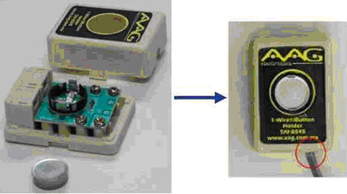
Make sure the 1-Wire Hub's C2 port runs to the iButton sensor in the System Cabinet, Run 1322. (See Illustration 1, Illustration 3, and Illustration 5).
Make sure the iButton disk is fully seated in the iButton holder receptacle. (See Illustration 5).
Verify that the High Order Shim (HOS) is not connected to the Host PC through the USB to Serial Converter.
| NOTE: | The HOS is designed to communicate through the Single Port Terminal Server. All systems with the HOS upgraded to HDx should have received this unit as part of the upgrade. Connecting the HOS to the PC through the USB to Serial Converter may cause intermittent communication problems with other USB devices. |
If the HOS is attached through the USB to Serial Converter, disconnect it and install the Single Port Terminal Service Kit provided in the upgrade.
Check the connection of the USB to DB9 Serial Adapter to the USB port on the front of the Linux PC.
This step confirms that the communication connections are made securely and properly to the appropriate ports.
Verify that the USB to 1-Wire Adapter is properly connected. See Illustration 6.
Illustration 6: USB to 1-Wire Adapter
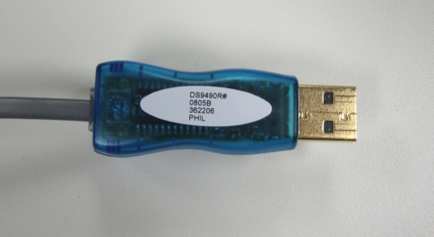
Verify that connections in Run 1383 are secure from USB to 1-Wire Adapter output port to the iButton Sensor 5141857-5 on the back of the GOC. (See Illustration 2 and Illustration 7).
Illustration 7: Operator Console
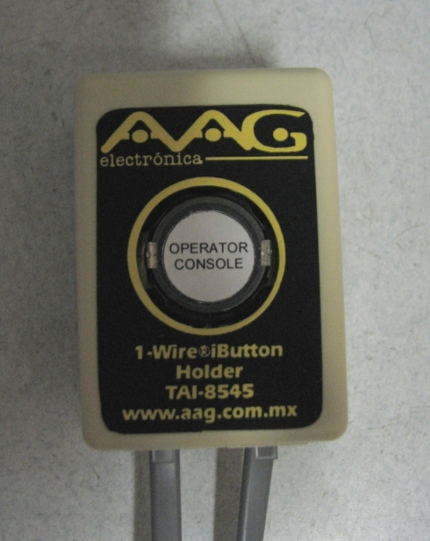
Verify that connections in Run 1384 are secure from iButton Sensor 5141857-5 on the back of the GOC to iButton Sensor 5141857-4 on System Cabinet. (See Illustration 2, Illustration 7, and Illustration 8).
Illustration 8: System Cabinet

Verify that both iButton disks are fully seated in the iButton holder receptacles. (See Illustration 5).
Verify that the sensor on the back of the GOC is labeled “Operator Console.” (See Illustration 7).
Verify that the sensor on the System Cabinet (in the equipment room) is labeled “System Cabinet.” (See Illustration 8).
Run the 1-Wire Network Diagnostic Tool by selecting: Diagnostics >> Peripherals >> 1-Wire Network Diagnostic.
Illustration 9: 1-Wire Network Diagnostic
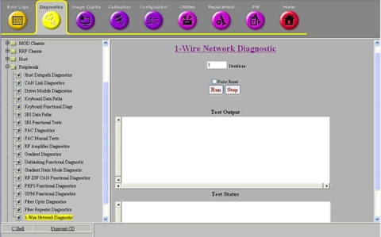
The 1-Wire Diagnostic checks to see if all of the 1-Wire devices in the network are connected (GOC and EQUIP). The diagnostic also outputs temperature and humidity values for the GOC and Equipment Room Sensor. All 1-Wire devices detected by the 1-Wire Network Diagnostic display in blue text in the Test Output area (see Illustration 10). 1-Wire devices which are not detected display in red text (see Illustration 11).
If desired, enter or select alternate test parameters as described below.
To run the diagnostic more than once, enter a different value in the Iterations field.
To force the 1-Wire network to be remapped, select Force 1-Wire Reset. This is useful when hardware has been replaced to identify 1-Wire devices in the new hardware.
| NOTE: | A TPS Reset also accomplishes a 1-Wire Reset, but any new hardware installed during troubleshooting can be identified using this option prior to doing a TPS Reset. |
Illustration 10: 1-Wire Devices Detected by the 1-Wire Network Diagnostic
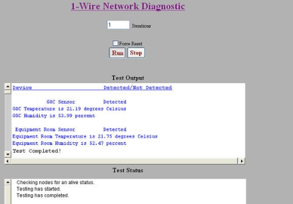
Illustration 11: 1-Wire Devices Not Detected by the 1-Wire Network Diagnostic

Verify iButton is seated correctly. An example of the iButton not seated is shown in Illustration 12.
Illustration 12: iButton Not Seated
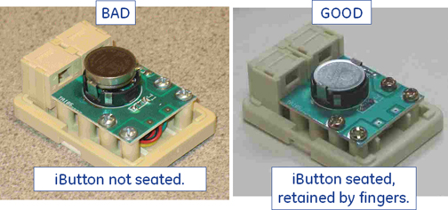
Verify that there is a good connection between iButton and holder (no intermittent or shorted connections). Examples of intermittent and shorted connections are shown in Illustration 13 and Illustration 14.
Illustration 13: Intermittent Connection

Illustration 14: iButton and Holder

| NOTE: | If disconnecting the iButton cable from the 1-Wire Hub results in detection of the opposite iButton, this suggests that the disconnected iButton or holder was shorting out the hub bus. Removing the failing iButton from its holder and slightly bending the holder contacts away from the traces underneath may restore functionality. Applying insulating tape as shown in Illustration 14 may also help. Otherwise, replace the holder. |
Verify that there is no daisy chain from iButton to iButton. An example of an iButton daisy chain is shown in Illustration 15.
Illustration 15: iButton Daisy Chain
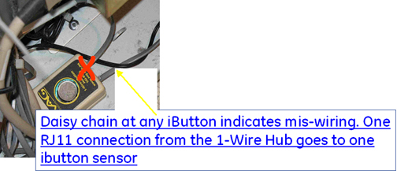
Verify that the connector is fully engaged in Hub at C2, and is In and Out of Port 5. An example of the connector not fully engaged in C2 is shown in Illustration 16.
Illustration 16: Connector Not Engaged in C2
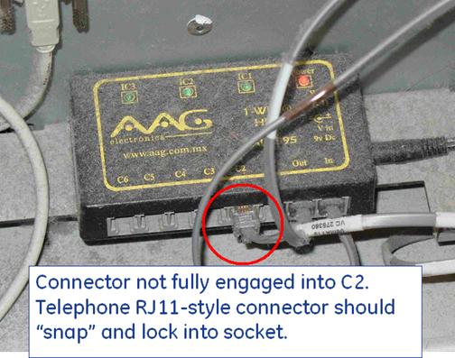
Verify that the connector is not plugged into the C1 port. An example of the connector incorrectly plugged into C1 is shown in Illustration 17.
Illustration 17: C1 Not Open
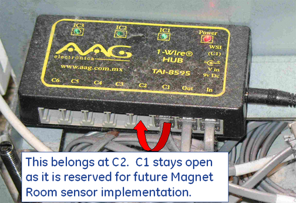
Verify that the connectors are fully inserted at the Serial Master and the Serial-USB Converter. An example of loose connection points is shown in Illustration 18.
Illustration 18: Loose Connection Points
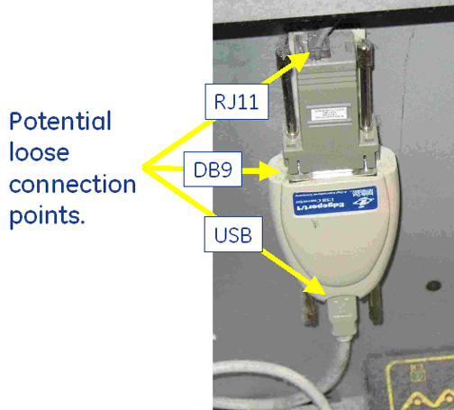
System needs a TPS reset or "Force Reset" in the 1-Wire Diags if an iButton is replaced.
The estimated life of an iButton, assuming a 30-minute sample rate, is from 5 to 7 years; an increase in sample rate decreases the iButton life span.
Sensors must be located on the outside of cabinets in the locations shown in the installation manual. Locating sensors on the inside of cabinets obscures the ability to sense the actual room temperature and humidity.
Convert degrees Fahrenheit to degrees Celsius using this formula:
C = (F - 32) / 1.8
Convert degrees Celsius to degrees Fahrenheit using this formula:
F = (C x 1.8) + 32
| NOTE: | The iButton sensors obtain a reading every 30 minutes. A reboot at installation is necessary for the iButtons to start sampling and for the system to start polling. The system polls iButtons once a day. These intervals cannot be edited or changed as they are in an encrypted config file in the field. |
Install Service Key.
Open the Common Service Desktop and select Utilites -> Toolbox -> Environmental Monitoring. See Illustration 19.
Select "click here to start this tool".
Illustration 19: Environmental Monitoring
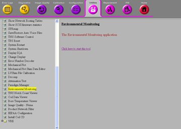
View the output similar to the one shown in Illustration 20. From the dropdown under "Choose data to view" you can select GOC temperature, GOC humidity, Equipment Room Temperature, or Equipment Room Humidity. Date and time are also displayed.
Illustration 20: Output
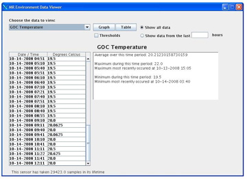
If none of these steps lead to successfully restoring communication between the sensors and the GOC, the sensors may need to replaced. These sensors are simple devices rated to last for 150,000 iterations (or approximately seven years) on the HDx Series system. They should not need replacing unless they have approached that level of usage.